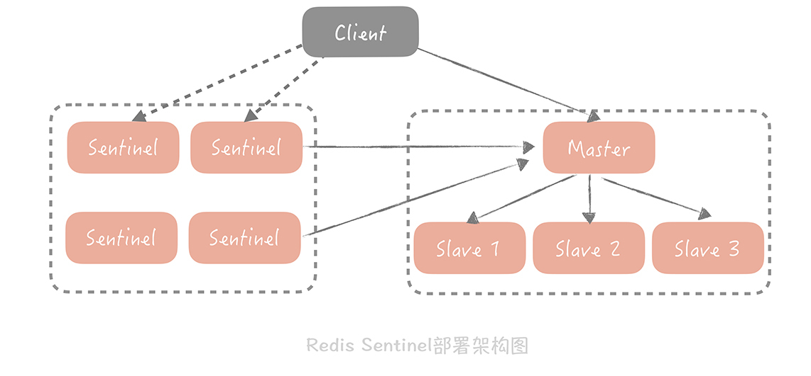

- 00 开篇词 为什么你要学习高并发系统设计？.md.html
- 01 高并发系统：它的通用设计方法是什么？.md.html
- 02 架构分层：我们为什么一定要这么做？.md.html
- 03 系统设计目标（一）：如何提升系统性能？.md.html
- 04 系统设计目标（二）：系统怎样做到高可用？.md.html
- 05 系统设计目标（三）：如何让系统易于扩展？.md.html
- 06 面试现场第一期：当问到组件实现原理时，面试官是在刁难你吗？.md.html
- 07 池化技术：如何减少频繁创建数据库连接的性能损耗？.md.html
- 08 数据库优化方案（一）：查询请求增加时，如何做主从分离？.md.html
- 09 数据库优化方案（二）：写入数据量增加时，如何实现分库分表？.md.html
- 10 发号器：如何保证分库分表后ID的全局唯一性？.md.html
- 11 NoSQL：在高并发场景下，数据库和NoSQL如何做到互补？.md.html
- 12 缓存：数据库成为瓶颈后，动态数据的查询要如何加速？.md.html
- 13 缓存的使用姿势（一）：如何选择缓存的读写策略？.md.html
- 14 缓存的使用姿势（二）：缓存如何做到高可用？.md.html
- 15 缓存的使用姿势（三）：缓存穿透了怎么办？.md.html
- 16 CDN：静态资源如何加速？.md.html
- 17 消息队列：秒杀时如何处理每秒上万次的下单请求？.md.html
- 18 消息投递：如何保证消息仅仅被消费一次？.md.html
- 19 消息队列：如何降低消息队列系统中消息的延迟？.md.html
- 20 面试现场第二期：当问到项目经历时，面试官究竟想要了解什么？.md.html
- 21 系统架构：每秒1万次请求的系统要做服务化拆分吗？.md.html
- 22 微服务架构：微服务化后，系统架构要如何改造？.md.html
- 23 RPC框架：10万QPS下如何实现毫秒级的服务调用？.md.html
- 24 注册中心：分布式系统如何寻址？.md.html
- 25 分布式Trace：横跨几十个分布式组件的慢请求要如何排查？.md.html
- 26 负载均衡：怎样提升系统的横向扩展能力？.md.html
- 27 API网关：系统的门面要如何做呢？.md.html
- 28 多机房部署：跨地域的分布式系统如何做？.md.html
- 29 Service Mesh：如何屏蔽服务化系统的服务治理细节？.md.html
- 30 给系统加上眼睛：服务端监控要怎么做？.md.html
- 31 应用性能管理：用户的使用体验应该如何监控？.md.html
- 32 压力测试：怎样设计全链路压力测试平台？.md.html
- 33 配置管理：成千上万的配置项要如何管理？.md.html
- 34 降级熔断：如何屏蔽非核心系统故障的影响？.md.html
- 35 流量控制：高并发系统中我们如何操纵流量？.md.html
- 36 面试现场第三期：你要如何准备一场技术面试呢？.md.html
- 37 计数系统设计（一）：面对海量数据的计数器要如何做？.md.html
- 38 计数系统设计（二）：50万QPS下如何设计未读数系统？.md.html
- 39 信息流设计（一）：通用信息流系统的推模式要如何做？.md.html
- 40 信息流设计（二）：通用信息流系统的拉模式要如何做？.md.html
- 加餐 数据的迁移应该如何做？.md.html
- 期中测试 10道高并发系统设计题目自测.md.html
- 用户故事 从“心”出发，我还有无数个可能.md.html
- 结束语 学不可以已.md.html
- 捐赠
14 缓存的使用姿势（二）：缓存如何做到高可用？
你好，我是唐扬。
前面几节课，我带你了解了缓存的原理、分类以及常用缓存的使用技巧。我们开始用缓存承担大部分的读压力，从而缓解数据库的查询压力，在提升性能的同时保证系统的稳定性。这时，你的电商系统整体的架构演变成下图的样子：

我们在 Web 层和数据库层之间增加了缓存层，请求会首先查询缓存，只有当缓存中没有需要的数据时才会查询数据库。
在这里，你需要关注缓存命中率这个指标（缓存命中率 = 命中缓存的请求数 / 总请求数）。一般来说，在你的电商系统中，核心缓存的命中率需要维持在 99% 甚至是 99.9%，哪怕下降 1%，系统都会遭受毁灭性的打击。
这绝不是危言耸听，我们来计算一下。假设系统的 QPS 是 10000/s，每次调用会访问 10 次缓存或者数据库中的数据，那么当缓存命中率仅仅减少 1%，数据库每秒就会增加 10000 * 10 * 1% = 1000 次请求。而一般来说我们单个 MySQL 节点的读请求量峰值就在 1500/s 左右，增加的这 1000 次请求很可能会给数据库造成极大的冲击。
命中率仅仅下降 1% 造成的影响就如此可怕，更不要说缓存节点故障了。而图中单点部署的缓存节点就成了整体系统中最大的隐患，那我们要如何来解决这个问题，提升缓存的可用性呢？
我们可以通过部署多个节点，同时设计一些方案让这些节点互为备份。这样，当某个节点故障时，它的备份节点可以顶替它继续提供服务。而这些方案就是我们本节课的重点：分布式缓存的高可用方案。
在我的项目中，我主要选择的方案有客户端方案、中间代理层方案和服务端方案三大类：
- 客户端方案就是在客户端配置多个缓存的节点，通过缓存写入和读取算法策略来实现分布式，从而提高缓存的可用性。
- 中间代理层方案是在应用代码和缓存节点之间增加代理层，客户端所有的写入和读取的请求都通过代理层，而代理层中会内置高可用策略，帮助提升缓存系统的高可用。
- 服务端方案就是 Redis 2.4 版本后提出的 Redis Sentinel 方案。
掌握这些方案可以帮助你，抵御部分缓存节点故障导致的，缓存命中率下降的影响，增强你的系统的鲁棒性。
客户端方案
在客户端方案中，你需要关注缓存的写和读两个方面：
- 写入数据时，需要把被写入缓存的数据分散到多个节点中，即进行数据分片；
- 读数据时，可以利用多组的缓存来做容错，提升缓存系统的可用性。关于读数据，这里可以使用主从和多副本两种策略，两种策略是为了解决不同的问题而提出的。
下面我就带你一起详细地看一下到底要怎么做。
1. 缓存数据如何分片
单一的缓存节点受到机器内存、网卡带宽和单节点请求量的限制，不能承担比较高的并发，因此我们考虑将数据分片，依照分片算法将数据打散到多个不同的节点上，每个节点上存储部分数据。
这样在某个节点故障的情况下，其他节点也可以提供服务，保证了一定的可用性。这就好比不要把鸡蛋放在同一个篮子里，这样一旦一个篮子掉在地上，摔碎了，别的篮子里还有没摔碎的鸡蛋，不至于一个不剩。
一般来讲，分片算法常见的就是 Hash 分片算法和一致性 Hash 分片算法两种。
Hash 分片的算法就是对缓存的 Key 做哈希计算，然后对总的缓存节点个数取余。你可以这么理解：
比如说，我们部署了三个缓存节点组成一个缓存的集群，当有新的数据要写入时，我们先对这个缓存的 Key 做比如 crc32 等 Hash 算法生成 Hash 值，然后对 Hash 值模 3，得出的结果就是要存入缓存节点的序号。

这个算法最大的优点就是简单易理解，缺点是当增加或者减少缓存节点时，缓存总的节点个数变化造成计算出来的节点发生变化，从而造成缓存失效不可用。所以我建议你，如果采用这种方法，最好建立在你对于这组缓存命中率下降不敏感，比如下面还有另外一层缓存来兜底的情况下。
当然了，用一致性 Hash 算法可以很好地解决增加和删减节点时，命中率下降的问题。在这个算法中，我们将整个 Hash 值空间组织成一个虚拟的圆环，然后将缓存节点的 IP 地址或者主机名做 Hash 取值后，放置在这个圆环上。当我们需要确定某一个 Key 需要存取到哪个节点上的时候，先对这个 Key 做同样的 Hash 取值，确定在环上的位置，然后按照顺时针方向在环上“行走”，遇到的第一个缓存节点就是要访问的节点。比方说下面这张图里面，Key 1 和 Key 2 会落入到 Node 1 中，Key 3、Key 4 会落入到 Node 2 中，Key 5 落入到 Node 3 中，Key 6 落入到 Node 4 中。

这时如果在 Node 1 和 Node 2 之间增加一个 Node 5，你可以看到原本命中 Node 2 的 Key 3 现在命中到 Node 5，而其它的 Key 都没有变化；同样的道理，如果我们把 Node 3 从集群中移除，那么只会影响到 Key 5 。所以你看，在增加和删除节点时，只有少量的 Key 会“漂移”到其它节点上，而大部分的 Key 命中的节点还是会保持不变，从而可以保证命中率不会大幅下降。

不过，事物总有两面性。虽然这个算法对命中率的影响比较小，但它还是存在问题：
- 缓存节点在圆环上分布不平均，会造成部分缓存节点的压力较大；当某个节点故障时，这个节点所要承担的所有访问都会被顺移到另一个节点上，会对后面这个节点造成压力。
- 一致性 Hash 算法的脏数据问题。
极端情况下，比如一个有三个节点 A、B、C 承担整体的访问，每个节点的访问量平均，A 故障后，B 将承担双倍的压力（A 和 B 的全部请求），当 B 承担不了流量 Crash 后，C 也将因为要承担原先三倍的流量而 Crash，这就造成了整体缓存系统的雪崩。
说到这儿，你可能觉得很可怕，但也不要太担心，我们程序员就是要能够创造性地解决各种问题，所以你可以在一致性 Hash 算法中引入虚拟节点的概念。
它将一个缓存节点计算多个 Hash 值分散到圆环的不同位置，这样既实现了数据的平均，而且当某一个节点故障或者退出的时候，它原先承担的 Key 将以更加平均的方式分配到其他节点上，从而避免雪崩的发生。
其次，就是一致性 Hash 算法的脏数据问题。为什么会产生脏数据呢？比方说，在集群中有两个节点 A 和 B，客户端初始写入一个 Key 为 k，值为 3 的缓存数据到 Cache A 中。这时如果要更新 k 的值为 4，但是缓存 A 恰好和客户端连接出现了问题，那这次写入请求会写入到 Cache B 中。接下来缓存 A 和客户端的连接恢复，当客户端要获取 k 的值时，就会获取到存在 Cache A 中的脏数据 3，而不是 Cache B 中的 4。
所以，在使用一致性 Hash 算法时一定要设置缓存的过期时间，这样当发生漂移时，之前存储的脏数据可能已经过期，就可以减少存在脏数据的几率。

很显然，数据分片最大的优势就是缓解缓存节点的存储和访问压力，但同时它也让缓存的使用更加复杂。在 MultiGet（批量获取）场景下，单个节点的访问量并没有减少，同时节点数太多会造成缓存访问的 SLA（即“服务等级协议”，SLA 代表了网站服务可用性）得不到很好的保证，因为根据木桶原则，SLA 取决于最慢、最坏的节点的情况，节点数过多也会增加出问题的概率，因此我推荐 4 到 6 个节点为佳。
2.Memcached 的主从机制
Redis 本身支持主从的部署方式，但是 Memcached 并不支持，所以我们今天主要来了解一下 Memcached 的主从机制是如何在客户端实现的。
在之前的项目中，我就遇到了单个主节点故障导致数据穿透的问题，这时我为每一组 Master 配置一组 Slave，更新数据时主从同步更新。读取时，优先从 Slave 中读数据，如果读取不到数据就穿透到 Master 读取，并且将数据回种到 Slave 中以保持 Slave 数据的热度。
主从机制最大的优点就是当某一个 Slave 宕机时，还会有 Master 作为兜底，不会有大量请求穿透到数据库的情况发生，提升了缓存系统的高可用性。

3. 多副本
其实，主从方式已经能够解决大部分场景的问题，但是对于极端流量的场景下，一组 Slave 通常来说并不能完全承担所有流量，Slave 网卡带宽可能成为瓶颈。
为了解决这个问题，我们考虑在 Master/Slave 之前增加一层副本层，整体架构是这样的：

在这个方案中，当客户端发起查询请求时，请求首先会先从多个副本组中选取一个副本组发起查询，如果查询失败，就继续查询 Master/Slave，并且将查询的结果回种到所有副本组中，避免副本组中脏数据的存在。
基于成本的考虑，每一个副本组容量比 Master 和 Slave 要小，因此它只存储了更加热的数据。在这套架构中，Master 和 Slave 的请求量会大大减少，为了保证它们存储数据的热度，在实践中我们会把 Master 和 Slave 作为一组副本组使用。
中间代理层方案
虽然客户端方案已经能解决大部分的问题，但是只能在单一语言系统之间复用。例如微博使用 Java 语言实现了这么一套逻辑，我使用 PHP 就难以复用，需要重新写一套，很麻烦。而中间代理层的方案就可以解决这个问题。你可以将客户端解决方案的经验移植到代理层中，通过通用的协议（如 Redis 协议）来实现在其他语言中的复用。
如果你来自研缓存代理层，你就可以将客户端方案中的高可用逻辑封装在代理层代码里面，这样用户在使用你的代理层的时候就不需要关心缓存的高可用是如何做的，只需要依赖你的代理层就好了。
除此以外，业界也有很多中间代理层方案，比如 Facebook 的Mcrouter，Twitter 的Twemproxy，豌豆荚的Codis。它们的原理基本上可以由一张图来概括：

看这张图你有什么发现吗？ 所有缓存的读写请求都是经过代理层完成的。代理层是无状态的，主要负责读写请求的路由功能，并且在其中内置了一些高可用的逻辑，不同的开源中间代理层方案中使用的高可用策略各有不同。比如在 Twemproxy 中，Proxy 保证在某一个 Redis 节点挂掉之后会把它从集群中移除，后续的请求将由其他节点来完成；而 Codis 的实现略复杂，它提供了一个叫 Codis Ha 的工具来实现自动从节点提主节点，在 3.2 版本之后换做了 Redis Sentinel 方式，从而实现 Redis 节点的高可用。
服务端方案
Redis 在 2.4 版本中提出了 Redis Sentinel 模式来解决主从 Redis 部署时的高可用问题，它可以在主节点挂了以后自动将从节点提升为主节点，保证整体集群的可用性，整体的架构如下图所示：

Redis Sentinel 也是集群部署的，这样可以避免 Sentinel 节点挂掉造成无法自动故障恢复的问题，每一个 Sentinel 节点都是无状态的。在 Sentinel 中会配置 Master 的地址，Sentinel 会时刻监控 Master 的状态，当发现 Master 在配置的时间间隔内无响应，就认为 Master 已经挂了，Sentinel 会从从节点中选取一个提升为主节点，并且把所有其他的从节点作为新主的从节点。Sentinel 集群内部在仲裁的时候，会根据配置的值来决定当有几个 Sentinel 节点认为主挂掉可以做主从切换的操作，也就是集群内部需要对缓存节点的状态达成一致才行。
Redis Sentinel 不属于代理层模式，因为对于缓存的写入和读取请求不会经过 Sentinel 节点。Sentinel 节点在架构上和主从是平级的，是作为管理者存在的，所以可以认为是在服务端提供的一种高可用方案。
课程小结
这就是今天分享的全部内容了，我们一起来回顾一下重点：
分布式缓存的高可用方案主要有三种，首先是客户端方案，一般也称为 Smart Client。我们通过制定一些数据分片和数据读写的策略，可以实现缓存高可用。这种方案的好处是性能没有损耗，缺点是客户端逻辑复杂且在多语言环境下不能复用。
其次，中间代理方案在客户端和缓存节点之间增加了中间层，在性能上会有一些损耗，在代理层会有一些内置的高可用方案，比如 Codis 会使用 Codis Ha 或者 Sentinel。
最后，服务端方案依赖于组件的实现，Memcached 就只支持单机版没有分布式和 HA 的方案，而 Redis 在 2.4 版本提供了 Sentinel 方案可以自动进行主从切换。服务端方案会在运维上增加一些复杂度。
总体而言，分布式缓存的三种方案各有所长，有些团队可能在开发过程中已经积累了 Smart Client 上的一些经验；而有些团队在 Redis 运维上经验丰富，就可以推进 Sentinel 方案；有些团队在存储研发方面有些积累，就可以推进中间代理层方案，甚至可以自研适合自己业务场景的代理层组件，具体的选择还是要看团队的实际情况而定。
© 2019 - 2023 Liangliang Lee. Powered by gin and hexo-theme-book.